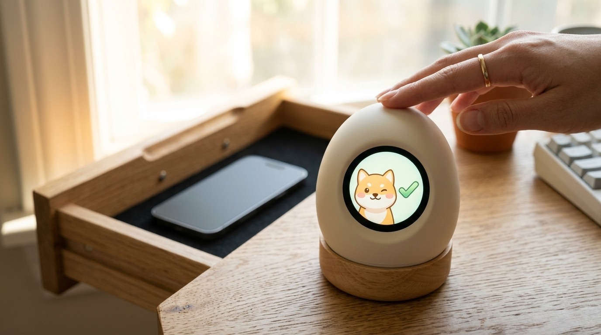
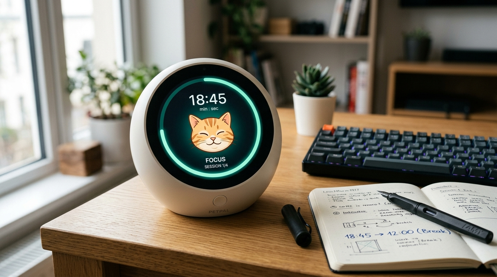
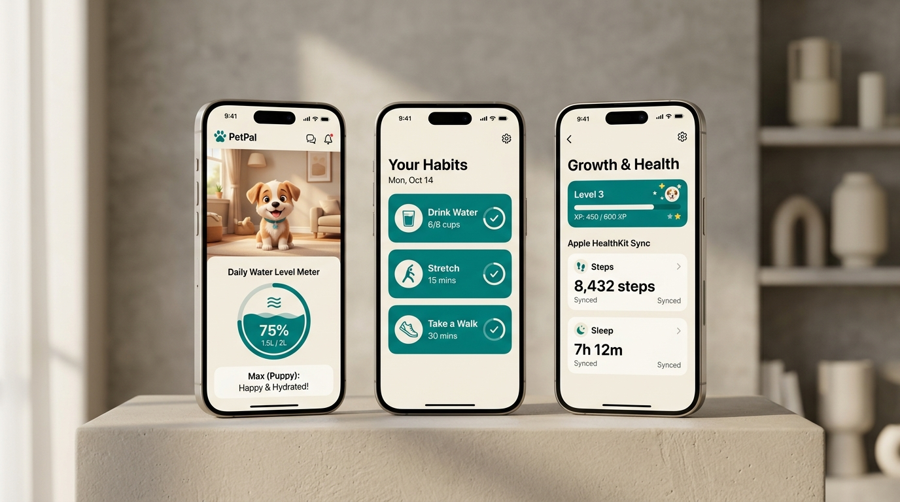
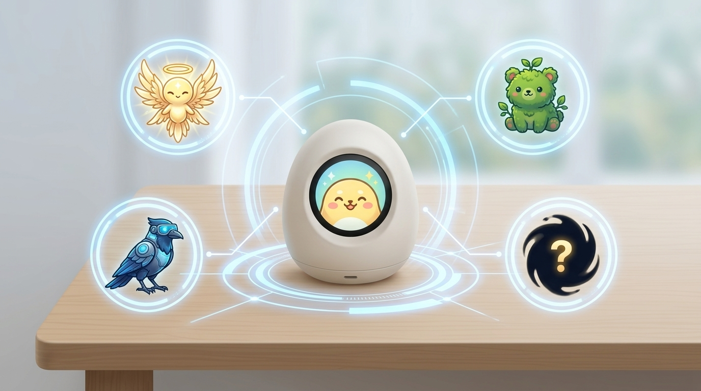
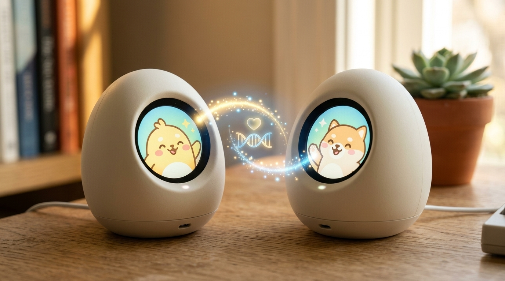
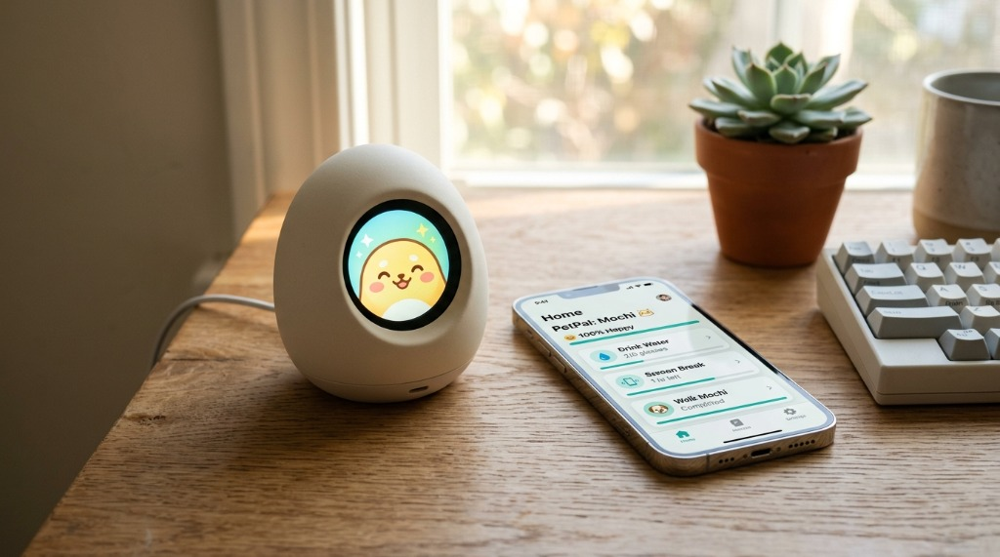

讓好習慣發生在
現實世界，
而不是手機裡。
掌心大小的桌上型習慣養成電子寵物 × 離線優先 × iOS 智慧連動。
摸一下打卡、番茄鐘跑在裝置端、感測器確認離座才算休息。把手機收進抽屜，好習慣自然長成。
「想養成好習慣，但工具本身就是最大干擾源」
我們都試過用手機下載各種打卡、番茄鐘軟體，但往往陷入啼笑皆非的惡性循環：
打卡順手滑社群
本來只是要打開 App 打卡「喝水」或「閱讀」，解鎖手機的瞬間，通知紅點與社群演算法立刻吞噬你的專注力，打完卡反而滑了半小時手機。
五分鐘休息變三十分鐘
番茄鐘在手機螢幕上響起，為了按「停止倒數」拿起手機，順便回了訊息、看了一支 Short，短暫休息直接失控成深度分心。
百日放棄率高達 70%
權威期刊 JMIR 2024 研究指出：純手機健康習慣類 App，超過 70% 用戶在 100 天內徹底棄用。純軟體缺乏「物理存在感」，終究敵不過惰性。
PetPal 的解法：物理隔離
把習慣互動搬回真實桌面，手機關靜音收進抽屜，用實體陪伴重構生活秩序。
源自 Xerox PARC 的「寧靜科技」（Calm Technology）
科技應該放大人類的能力，而不是掠奪人類的注意力。
周邊注意力存在
平常安靜地待在桌角，偶爾眨眨眼、呼吸微光。不跳無聊推播，不需要你無時無刻低頭關注。它像真實寵物一樣在身旁陪伴，在你需要專注時絕不安擾。
極致直覺的實體手勢
摸一下裝置完成打卡；單鍵四段手勢（短按、雙擊、長按 1.5 秒、長按 5 秒）對應四個核心指令。外殼絕不多開多餘按鍵，用物理觸感取代繁瑣的螢幕點擊。
真正的「離線優先」
番茄鐘倒數與寵物狀態機完全跑在 ESP32-S3 硬體端，手機只是遙控器。斷線期間硬體照常運作計時，重新靠近手機時自動無感回傳——純 App 競品完全做不到。
重新定義生活節奏的六大情境
從個人專注、離座步態偵測，到數位靈魂演化與 StreetPass 近場社交。
手機收進抽屜也能打卡：
摸一下裝置完成習慣紀錄
無論是晨間喝水、維他命補充還是閱讀打卡，手掌輕撫裝置頂部，電容感測器立即捕獲指令，並伴隨細緻的掌心微震。手機可以整天收在抽屜裡，你不再需要為了證明自己自律而碰觸手機。
- 電容式高靈敏觸控，盲操作 0 延遲響應
- 分級線性微震（TICK），清晰反饋打卡成功


番茄鐘跑在硬體端：
25 分鐘專注進度環，視野一眼可見
圓形螢幕外圍由發光進度環平滑倒數，餘光即可獲悉專注剩餘時間。倒數結束時以柔和震動與寵物表情提醒，讓你的專注完全沉浸在目前的桌面工作上。
- 240×240 圓形 LCD 精緻進度環渲染
- 手機斷線照常計時，完成資料自動回填
物理久坐感測：
只有真正站起來走動，休息才算數
以往久坐提醒跳在手機上，點個「稍後」就繼續坐著。PetPal 內建 6 軸 IMU 步態辨識演算法：連續靜坐 45 分鐘觸發提醒，手機端沒有任何按鈕可以敷衍關閉，必須拿起實體 PetPal 走動滿 5 步才能解除警報！走滿 15 步直接完成今日散步打卡！
- QMI8658 六軸感測器步頻動態濾波
- 累計 5 步撤卡、15 步散步達成雙向閉環
軟硬體全鏈路雙向握手流程

iOS App 自動同步：
習慣、健康數據與寵物成長一次看見
原生 SwiftUI 打造的簡約 App。無縫對接 Apple HealthKit 同步每日步數與睡眠週期。寵物的體力與心情真實反映你的日常作息。嚴守本地加密原則，健康私隱絕不上傳至任何第三方伺服器。
- 支援自訂習慣新增、Emoji 挑選與色彩標籤
- 無感背景同步，連線速度小於 100 毫秒
九大風格寵物夥伴，
真實生活作息驅動數位染色體突變
每個人的生活形態都不相同。從初生形態 Mochi 開始，如果你經常早起專注，將分支突變為「曦光守護者」；夜間心流型用戶將孕育出「賽博渡鴉」；戶外活躍型用戶則解鎖「深林樹熊」。甚至包含心流極客限定的隱藏彩蛋角色！
- 9 種不同像素表情與動態性格反應
- 作息成就累積，解鎖稀有專屬外觀


BLE 近場擦身互動：
源自狗狗喜愛交朋友的同伴羈絆
靈感來自狗狗散步相遇時搖尾巴、開心交朋友的純真天性。在同一個自習室或辦公室，兩台 PetPal 裝置進入 1 公尺範圍內時，會透過 BLE 自動無感握手。螢幕邊緣亮起愛心牽絆光效，兩隻寵物互相揮手致意！與朋友一起結伴達成 21 天習慣養成，解鎖雙人專屬稱號與紀念勳章。
- 像狗狗散步相遇般自然純粹的近場互動
- 零設定、無感配對，讓好習慣在朋友間互相激勵
親手體驗「寧靜科技」雙向閉環
在下方點擊模擬按鈕，感受真實 ESP32-S3 掌心震動與 iPhone App 撤銷久坐、打勾習慣的即時聯動：
Sedentary Alert
47 mins已經坐很久囉！拿起 PetPal 走動走動。
* 本互動模擬器直接映射 PetPal 於 2026/09/04 通過之實機雙向通訊協議（ESP32-S3 QMI8658 IMU ＋ iOS App State）。
精悍硬體，無妥協的工業設計
我們不賣概念簡報。PetPal 原型已採用量產等級工業零組件完成組裝與韌體驗證：

用一次聚餐的費用，換一輩子的好習慣
立即登記電子信箱，鎖定首發限量 68 折保證預約名額，無需預付任何訂金。
PetPal 早期贊助者方案
- ✓ PetPal 實體桌面陪伴裝置乙台
- ✓ 專屬 Type-C 編織充電連接線
- ✓ iOS 配套 App 終生核心功能免費
- ★ 首波早鳥專屬：解鎖限定隱藏角色「曦光之靈」
- ✓ 募資啟動後第 1 批優先排程出貨
標準零售定價
- ✓ PetPal 實體桌面陪伴裝置乙台
- ✓ 標準 Type-C 充電線
- ✓ iOS 配套 App 終生核心功能免費
- ✕ 無早鳥限定角色
加入 Early Bird 早鳥通知名單
募資正式上線前 48 小時，我們將寄發優先購買通道給名單中的 VIP，享有最低折扣保障。
🔒 我們重視您的隱私，絕不向第三方發送垃圾信件。